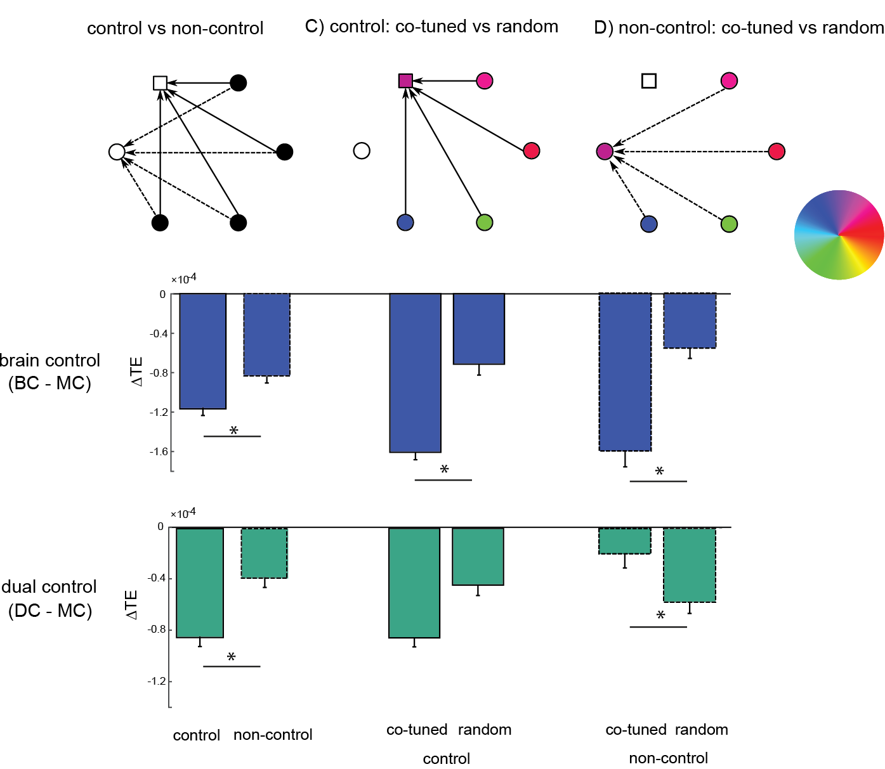
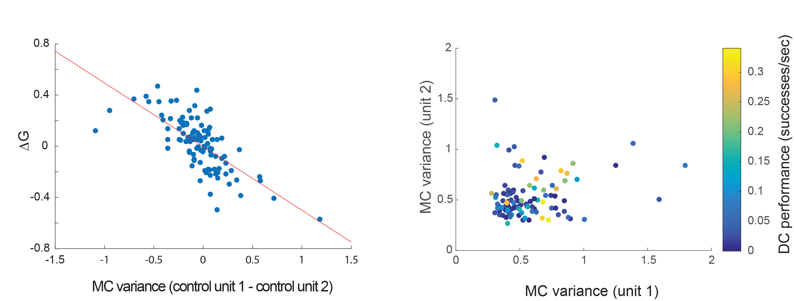

Unraveling principles of motor control: from nerve nets to neural prosthetics
Computational neuroscience seminar
Ben Lansdell
Outline
- Whole animal imaging in cnidarian Hydra
- Motor encoding in concurrent use brain-computer interfaces
Neural activity encodes features of stimuli and behavior
If an individual neuron spikes at times $\{t_i\}$: $$y(t)=\sum_{i=1}^{Y(T)}\delta(t-t_{i}),$$ then, in general $$y(t)\sim f[x(t)].$$ But, starting simply, $$y(t)\sim f(k*x(t)),$$ where $k(\tau)$ are feature vectors.Neural encoding models

Adapted from Aljadeff et al Neuron 2016
$$\begin{align*}y_t &\sim \text{Poisson}(\lambda_t),\\ \lambda_t &= f[\mathbf{x}_t, y_t] = f\left(\mu + \sum_i k_i x_{t-i} + \alpha_i y_{t-i}\right)\end{align*}$$
Encoding in primary motor cortex

Scott et al Nature 2001
- Individual neurons in M1 encode parameters related to kinetics and kinematics
- BUT tuning is mixed and labile
Multi-unit encoding in primary motor cortex
- Population vector (PV) encodes reach direction in center-out tasks
- BUT PV can be biased, only applies in certain situations

Georgopoulos et al 1983
Latent dynamics through multi-unit recordings
Assume neural activity relies also on $\mathbf{z}_t$, internal processes which we do not observe directly:
$\Rightarrow$ Estimate $\mathbf{z}_t$ through dimensionality reduction, state-space models, etc

Motor encoding and designing brain-computer interfaces
- Single unit BCIs can be trained through biofeedback
- Peak performance independent of PD
[Moritz et al 2007]

Law et al 2014
Motor encoding and designing brain-computer interfaces
Conversely
- Neural activity during brain-control relies on natural motor reportoire
- This poses constraints on learning BCI tasks

Sadtler et al 2015
Motor encoding and designing brain-computer interfaces
Conversely
- Neural activity during brain-control relies on natural motor reportoire
- This poses constraints on learning BCI tasks

Sadtler et al 2015
Dual-control brain-computer interfaces
Applications:
- Allow stroke patients to regain functionality through co-opting healthy motor cortex to control BCI in conjunection with residual movement
- Supernumerary BCIs
- Insight into learning novel coordination tasks
$\Rightarrow$ How does motor cortical activity coordinate to accomplish this task?

Dual-control brain-computer interfaces
Setup:
- One monkey implanted with multi-electrode Utah array in hand/wrist area of primary motor cortex
- Performs random target pursuit task

Dual-control brain-computer interfaces
- Provides measure of preferred tuning angle $\theta$ and tuning strength
- Units chosen with preferred tuning 90 rotated from dual control direction

Milovanovic et al 2015
Changes in tuning of non-control units
- Brain-control induces control-unit specific changes in tuning angle
- Dual-control does not

Changes in tuning of non-control units

In dual-control tuning angles are more similar to manual control than to brain control
Changes in functional connectivity of population
How do relations bewteen units differ in brain- and dual-control tasks?
For a fixed network of units, compute transfer entropy between units in each condition:
$$
H_{X\to Y} = I(Y_t|Y_{t-1}, \dots, Y_{t-T}) - I(Y_t|Y_{t-1}, \dots, Y_{t-T},X_{t-1}, \dots, X_{t-T})
$$
for Shannon entropy $I$.
Study differences in connectivity between brain-, dual- conditions and manual condition.
Changes in functional connectivity of population
- Brain-control: overall decrease in functional connectivity to control units
- Dual-control: functional connectivity between co-tuned units does not change, except when control unit involved
Alignment of 'brain-control space' and 'intrinsic variability' predicts performance
- Neither tuning nor functional connectivity analysis predict performance
- Examine co-activity patterns during manual control -- 'intrinsic variability'
- Measure with GPFA

Alignment of 'brain-control space' and 'intrinsic variability' predicts performance
- Neither tuning nor functional connectivity analysis predict performance
- Examine co-activity patterns during manual control -- 'intrinsic variability'
- Measure with GPFA

Cursor control requires intrinsic variance of control units
BCI cursor control: $$ x_t = \sum_{n=1}^N \alpha_n(y_t^n - \beta_t^n) $$
- $\beta_t^n$ moving estimate of baseline firing of unit $n$.
- Linear, moving average model
$\Rightarrow$ use Granger causality to quantify unit contributions to cursor control, $\mathcal{G}$

Cursor control requires intrinsic variance of control units
- Intrinsic variance of units predicts cursor contribution in dual-control task
- High dual-control performance only occurs when at least one control unit has high intrinsic variability
Summary
- Tuning and connectivity analysis suggest dual-control task generates cortical activity more similar to that observed in manual control task
- Intrinsic variance of control units only variable found to predict performance and control unit contributions -- motor unit tuning does not constrain how the task is performed
Outline
- Whole animal imaging in cnidarian Hydra
- Motor encoding in concurrent use brain-computer interfaces
Whole-animal imaging in unconstrained Hydra
Why?
- Small (0.5mm -- 1.5cm) -- can fit into FOV of traditional microscope
- Translucent; nerve net, easier imaging
- Does not age, and can regenerate
Hydra anatomy

Adapted from Technau and Steele 2011
Hydra behavior

Aims
Understand (and control) neuronal basis of simple behavior such as contracting and expelling water.
Sub-aims:
- Track Hydra pose
- Register and track neurons
- Record neural activity
Experiment


Methods
- Create Act-GCaMP6s transgenic Hydra
- Mount between coverslips separated by .1mm spacer
- Image calcium transients
Whole-body calcium imaging in Hydra
Deformable object tracking
Extended Kalman filter tracking
$$\begin{align}y_t&=h(x_t) +\nu_t \\
x_t &= f(x_{t-1}) +\epsilon_t\end{align} $$
Where $x_t$ is the Hydra positions and velocities, $y_t$ is the generated
image.
- High-dimensional -- slow
- Unstable -- once tracking lost, difficult to recover
Multi-frame optic flow image registration
Ravi Garg, Anastasios Roussos, Lourdes Agapito, International journal of computer vision 104 (3), 286-314, 2013
Multi-frame optic flow image registration

Multi-frame optic flow image registration
- Dense optic flow with subspace constraints
- For each pixel find linear combination of basis paths, $L$, that minimize energy

- $I_f$ = image at frame $f$,
- $I_0$ = reference frame (need not be first frame of video),
- $Q_f^u$, $Q_f^v$ = basis paths at frame $f$,
- $\alpha$ = smoothness regularizer
Tracking with optic flow
- blue = hand tracked neurons
- green = w/in 6px of 'true', red = >6px of 'true'
Tracking with optic flow: performance
Comparison to hand annotated neuron tracks
Per frame:
- at least 52% neurons are tracked within 6px
- on average 82% neurons tracked within 6px
- 42% neurons tracked within 6 px throughout all video
Extending to longer sequences

Choosing which paths to extend
Measure image registration error

Exploiting periodicity in Hydra behavior
Stereotyped Hydra behavior:
elongate then contract
Measure optic flow error, $f_{ij}(x)$, between frames with regular spacing
'iframes' -- every 250 frames
 Frame index
Frame index
Exploiting periodicity in Hydra behavior
Two clusters: contracted and elongated
$\Rightarrow$ By registering regions of each iframe with a ref. frame we extend paths into temporally distant but positionally related frames
$\Rightarrow$ A mechanism to handle arbitrarily long videos without accumulation of tracking error


Segmenting regions to extend

Segmenting regions to extend
$$\begin{align*}\min_{u_l}\frac{1}{2}\sum_{l=1}^k \int_\Omega |\nabla u_l|\,dx
+ \frac{\lambda}{2}\sum_{l=1}^k \int_{\Omega} u_l(x)f_l(x)\,dx\end{align*}
$$
with $f_l(x) = |g(x)-c_l|^2$. Assume $c_l$ are known and $\mathbf{u}\in U$:
$$
U = \left\{u_l:\sum_l^k u_l(x) = 1, \quad u_l(x) \ge 0, \forall x\in\Omega\right\}
$$
Convex in $\mathbf{u}$
Select color via $v(x) = \text{argmax}_l u_l(x)$
Mumford-Shah image segmentation
Chambolle algorithm solves problems:
$$\min_{x\in X}F(Kx) + G(x)$$
for convex $F(\cdot):Y\to [0,\infty]$ and $G(\cdot):X\to [0,\infty]$,
in primal-dual form:
$$\min_{x\in X}\max_{y\in Y} \langle Kx, y\rangle - F^*(y) + G(x)$$
Algorithm:
- Initialization: $\tau, \sigma > 0, \theta \in [0,1], (x^0,y^0)\in X\times Y$. Set $\bar{x}^0 = x^0$
- Iterate until convergence: ($n\ge 0$) $$\begin{align} y^{n+1} &= \pi_{F^*}(y^n + \sigma K \bar{x}^n; \sigma)\\ x^{n+1} &= \pi_G(x^n - \tau K^* {y}^{n+1}; \tau)\\ \bar{x}^{n+1} &= x^{n+1} +\theta(x^{n+1} - x^n) \end{align}$$
Mumford-Shah image segmentation
With proximal operator
$$
\pi_G(y;\tau) = \text{argmin}_{x}\frac{\|x-y\|_2^2}{2\tau}+G(x)
$$
Primal-dual MS image segmentation:
$$\begin{align}\min_{u=(u_l)_{l=1}^k} \max_{p=(p_l)_{l=1}^k} &\left(\sum_{l=1}^k\langle \nabla u_l, p_l \rangle +\langle u_l, f_l \rangle \right) +\delta_U(u) - \delta_P(p) \end{align}$$
So,
- $K = \nabla$ (first order forward difference)
- $K^* = -\text{div}$ (first order backward difference)
- $F^*(p) = \delta_P(p)$ with $P=\left\{ p\in Y^k:\|p_l\|_\infty \le \frac{1}{2}\right\}$
- $G(u) = \delta_U(u)$
Segmentation of label tracked regions
For $K$ reference frames and $L$ iframes, let $f_{ij}(x)$ represent the optic flow error in using reference image $i$ to construct image $j$. $$\begin{align}\min_{u} \max_{p} \sum_{l=1}^L\left(\sum_{k=1}^K\langle \nabla u_{kl}, p_{kl} \rangle +\langle u_{kl}, f_{kl} \rangle \right) +\delta_U(u) - \delta_P(p) \end{align}$$
Proposed method
1. Select very sparse set of reference frames (ref frames)
2. Select regular set of inter-frames (iframes)


3. Use optic flow+image segmentation to label regions mapping to reference frames

Proposed method
4. Within each iframe block run MFSF for dense registration

Proposed method
5. Associate each path from (4) with a ref frame using segmentation (3)

Thus every tracked path is associated with a point in a reference frame
Choosing ref frames
Want number of ref frames to balance global registration vs registration error
Add a group LASSO penalty for number of reference frames used:
$$\begin{align}\min_{u} \sum_{l=1}^L\left(\sum_{k=1}^K \langle u_{kl}, f_{kl} \rangle \right) +\delta_U(u) - \delta_P(p) + \frac{\lambda_2}{2}\sum_{k=1}^K\left(\sum_{l=1}^L \|u_{kl}\|^2_2 \right)^{1/2} \end{align}$$
The proximal operator $\pi_G$ now becomes:
$$
\pi_G(y;\tau) = \text{argmin}_{x}\frac{\|x-y\|_2^2}{2\tau}+\frac{\lambda_2}{2}\sum_{k=1}^K\left(\sum_{l=1}^L \|y_{kl}\|^2_2 \right)^{1/2}+\delta_U(y)
$$
Compute $\pi_G$ with ADMM
Extending with $K=2; L = 8$
Future work
- Create larger hand annotated datasets for performance evaluation
- Use temporal continuity between adjacent blocks to relate reference frames to one another
Acknowledgments
- Adrienne Fairhall
- Chet Moritz
- Ivana Milovanovic
- Cooper Mellema
- Eberhard Fetz
- Fairhall lab
- Anatoly Buchin
- Moritz lab
- Charlie Matlack
- Robert Robinson
- Yuste lab
- Christophe Dupre
- John Szymanski